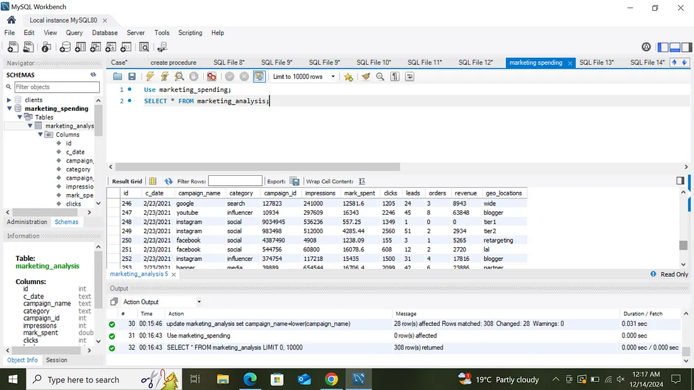
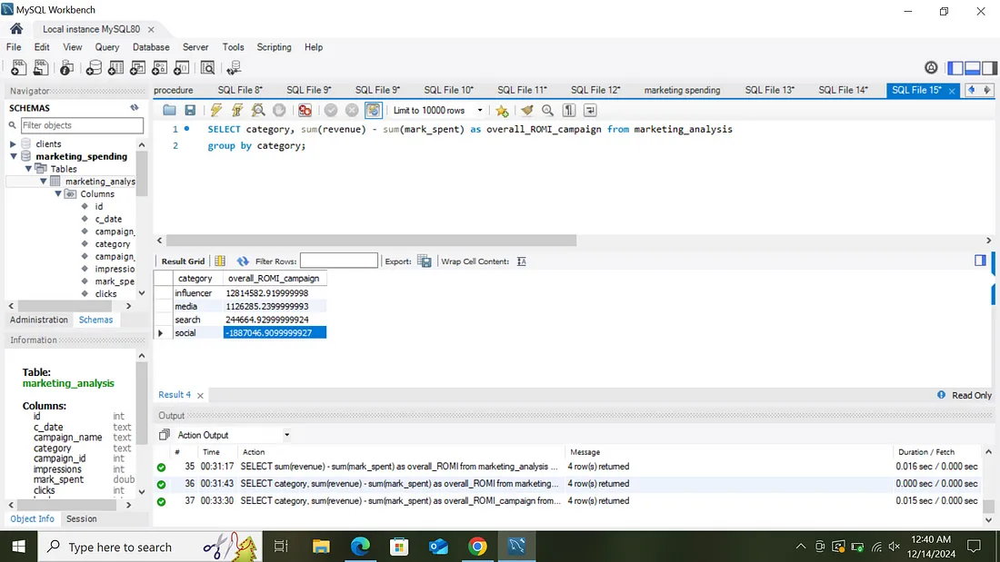

SQL Portfolio Project: Analyzing Digital Marketing Metrics
By Joyce Kimaiyo | 6 min read
Business Question
The digital marketing dataset from Kaggle (https://www.kaggle.com/datasets/sinderpreet/analyze-the-marketing-spending) was used for this project to analyze marketing expenditure, revenue generated, and customer behavior—specifically, identifying who clicked on the ad banner, who signed up, and who completed a purchase.
Additionally, various marketing metrics were calculated to assess the effectiveness of the campaign and identify key parameters relevant for further analysis. The project aimed to answer the following questions:
Overall ROMI (Return on marketing investment)
ROMI by campaigns
Performance of the campaign depending on the date — on which date did the company spend the most money on advertising, when did the company get the biggest revenue when conversion rates were high and low?
What were the average order values by the campaign?
When buyers are more active? What is the average revenue on weekdays and weekends?
Which types of campaigns work best — social, banner, influencer, or search?
Which geo locations are better for targeting — tier 1 or tier 2 cities?
Data Cleaning
In the Campaign Name category, two types of information were grouped into one, requiring the identification of geo-locations that were more effective for targeting—Tier 1 or Tier 2 cities. It was necessary to separate "Facebook_tier1" from "Facebook" and "tier1," which was achieved by first altering the table and adding a new column. The column was then updated, and the substring_index string function was used to separate the two words using the underscore as a delimiter. Additionally, there was an issue with inconsistent spelling in some instances of the word "Facebook," such as "facebOOK." To standardize the data, the .lower string function was applied to ensure all values in the column were converted to lowercase. Lastly, since MySQL expects date values in the YYYY-MM-DD format for proper date and time operations, the existing date format, which was in MM-DD-YYYY, needed to be converted accordingly.
Data Analysis

To calculate overall ROMI, the total revenue is summed, and the total marketing expenditure is subtracted.
To calculate ROMI by campaign category, the data was grouped by campaign category by adding a category column to the SELECT clause.
To determine the date on which the company spent the most on advertising, the date and market spend values can be selected, ordered by revenue in descending order, and limited to one result.
To identify the date with the highest revenue, the date and revenue values were selected, ordered by revenue in descending order (from largest to smallest). This helps determine the periods when the company achieved high conversion rates from its campaigns.
To determine the average order value by campaign, the category and average number of orders are selected and then grouped by category.
Buyer Activity on Weekdays vs. Weekends
To differentiate between weekdays and weekends, the DAYOFWEEK() function is used, which returns a number from 1 to 7 representing the day of the week (1 = Sunday, 7 = Saturday). First, the table is altered to add a new column, day_type, to store the values. The table is then updated using a CASE function, categorizing days 1 and 7 as weekends and the rest as weekdays. Finally, buyer activity is analyzed by selecting day_type and orders, then grouping by day_type. The analysis indicates that weekdays have more active buyers than weekends.
Most Effective Campaign Types
To evaluate campaign effectiveness, ROMI per category is used, revealing that influencer campaigns yield the best results.
Best Geo-Locations for Targeting: Tier 1 vs. Tier 2 Cities
To determine the most effective geo-locations for targeting, overall ROMI per geo-location is analyzed. First, the table is altered to include a new column, ROMI, which stores the difference between revenue and marketing spend. The table is then updated with calculated values, and the geo-locations are selected, with ROMI summed as total_ROMI, grouped by geo-location, and ordered in descending order. The analysis indicates that Tier 1 cities yield a higher return on investment compared to Tier 2 cities.